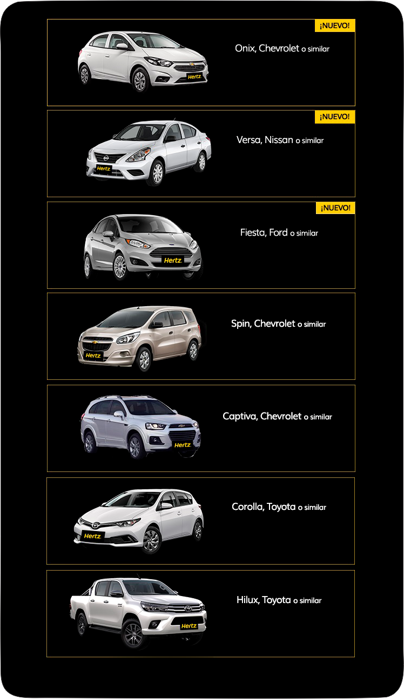

En esta sección encontrará información referida al software de gestión "Alquilauto". Este espacio pretende brindar respuestas a preguntas frecuentes referidas al funcionamiento de la aplicación, para garantizar al cliente un espacio de resolución de problemas.
Para registrar un alquiler seleccione un vehículo disponible de la lista. A continuación ingrese los datos del cliente y presione “Aceptar”. En este punto el sistema le devolverá un ticket con los datos de la operación.
Para ingresar un nuevo vehículo a la lista, debe presionar el control “Agregar vehículo”, completar los datos del formulario y presionar “Aceptar”. Sólo el Supervisor puede ejecutar esta función.
Para realizar una devolución presionamos el control “Devolución”, buscamos el alquiler en el registro e ingresamos el kilometraje recorrido. El sistema debe devolver una factura con el detalle de los costos calculados.
Para actualizar el valor de unidades de cobro debemos presionar el control correspondiente y se nos mostrará un formulario. Una vez aquí ingresamos el nuevo valor y a continuación presionamos el botón “Aceptar”.
